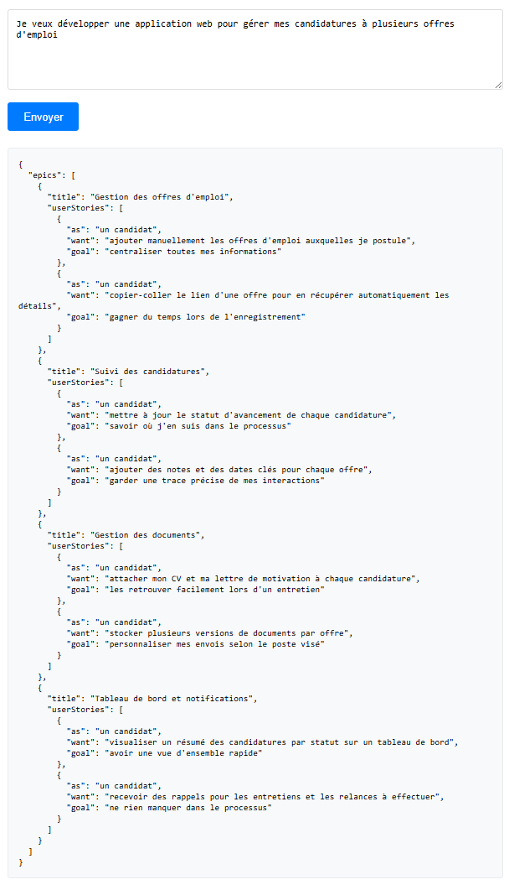
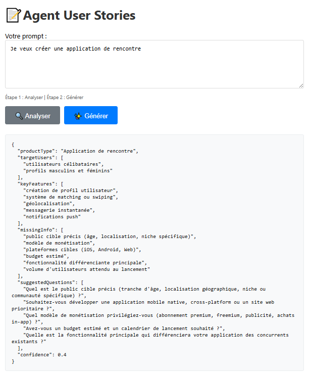
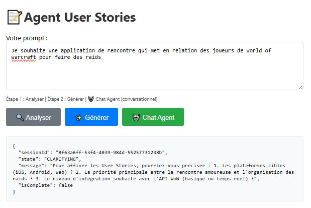
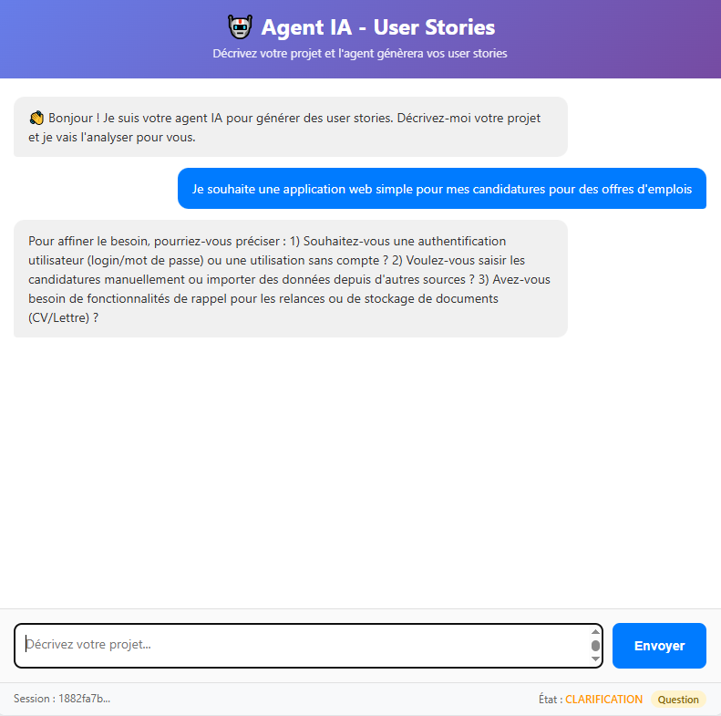
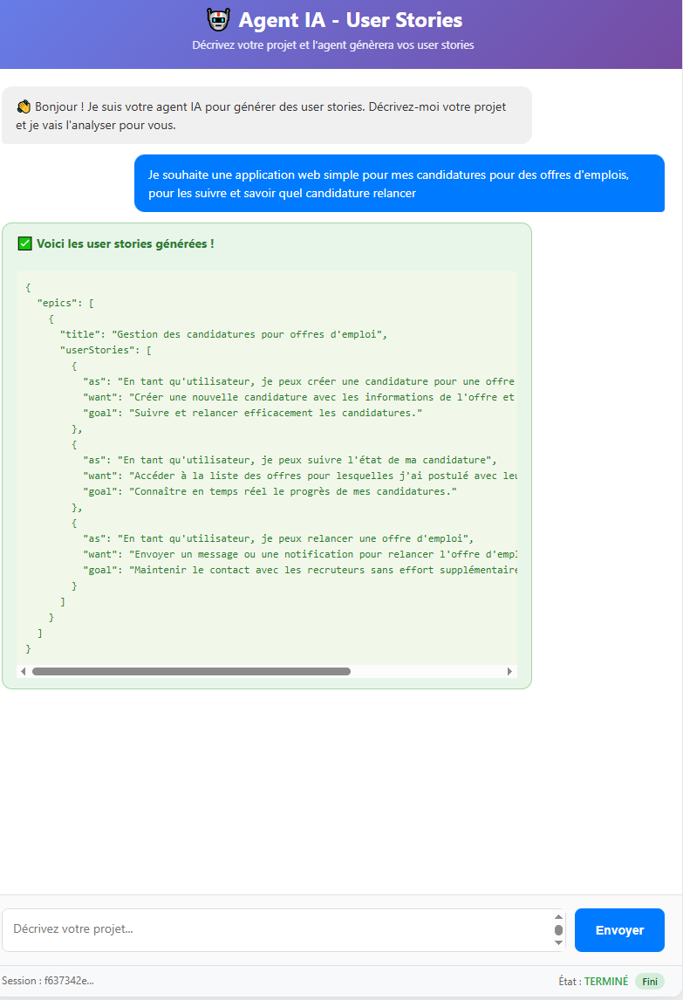
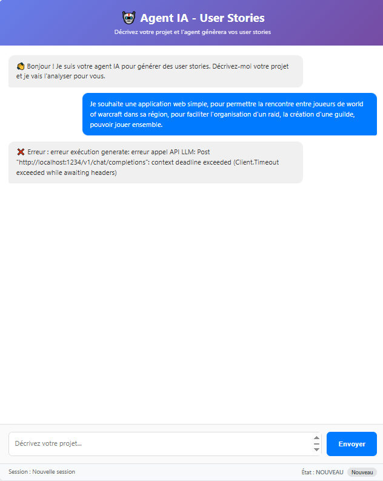

Après avoir expérimenté les modèles de langage en local et les workflows de génération d'images, je voulais aller plus loin. L'étape logique suivante : comprendre et construire des agents IA autonomes. Pas de simples chatbots, mais des systèmes capables d'analyser un besoin, poser des questions de clarification, et produire un livrable structuré.
Le projet que je me suis fixé : un agent de génération de user stories. L'idée est simple : décrire une idée d'application en quelques mots, et laisser l'IA produire des epics et des user stories prêtes à l'emploi pour une équipe de développement.
Tout ce projet a été réalisé entièrement en local. L'agent IA est hébergé sur ma propre machine grâce à LM Studio, qui me permet de servir des modèles via une API locale. Cette architecture m'a donné l'occasion de tester plusieurs LLM open source et de comparer leurs résultats : qwen/qwen3.6-27b, nvidia/nemotron-3-nano-4b, et Gemma 4 26B. Chacun a ses forces et ses faiblesses, mais les confronter m'a permis d'affiner les prompts et le comportement de l'agent.
I - Du concept à l'agent
Je commence simplement en implémentant un workflow pipeline pour avoir un aperçu du résultat que je souhaite. L'idée est de chaîner les étapes de manière linéaire : réception du prompt, traitement par le modèle, et retour du résultat. Pour faciliter l'interprétation automatisée par l'agent, je lui donne dès le départ le format JSON attendu en sortie. Ainsi, le modèle sait exactement quelle structure respecter, ce qui rend le parsing bien plus fiable et permet à l'agent de raisonner sur des données structurées.
Je définis le comportement attendu : l'agent doit suivre un workflow en plusieurs étapes :
- Analyser : comprendre le besoin exprimé par l'utilisateur
- Clarifier : poser des questions si le prompt est trop vague
- Générer : produire des user stories structurées au format JSON
Pour l'interface, je pars sur une application web simple avec un champ de saisie et un affichage conversationnel. L'agent dialogue avec un modèle local accessible via une API.
Le premier test est prometteur : je décris une application de gestion de candidatures, et l'agent me retourne immédiatement quatre epics bien structurées avec leurs user stories respectives. Mais ce n'est qu'un pipeline basique. Il fonctionne, mais il faut maintenant rendre le résultat plus intelligent.

II - L'analyse et la clarification
Le vrai défi arrive avec les prompts ambigus. Si je dis simplement "Je veux créer une application de rencontre", le résultat serait trop générique. J'ai donc ajouté une étape d'analyse intermédiaire :
- le type de produit
- les utilisateurs cibles
- les fonctionnalités clés
- les informations manquantes
- les questions suggérées pour affiner le besoin
Cette analyse permet à l'agent de détecter ce qui manque et de proposer des questions avant de générer les user stories. C'est un vrai game changer : l'agent n'est plus un simple exécutant, il devient un véritable interlocuteur.

III - Analyse complète et détection des lacunes
Une fois le pipeline de base fonctionnel, je voulais rendre l'agent véritablement intelligent. La clé : une analyse complète de la demande. L'agent doit examiner le prompt sous toutes ses coutures et détecter si des informations manquent pour produire une réponse claire et complète.
Je mets en place une étape d'analyse approfondie. L'agent évalue le prompt selon plusieurs critères : le type de produit, les utilisateurs cibles, les fonctionnalités attendues, les contraintes techniques, et les objectifs métier. Pour chaque critère, il détermine si l'information est suffisante ou si elle doit être complétée.
Si des lacunes sont détectées, l'agent passe en mode CLARIFICATION. Il ne génère pas de user stories à ce stade : il pose des questions ciblées pour obtenir les informations manquantes. L'utilisateur répond directement dans le chat, ce qui enrichit progressivement le contexte.
Par exemple, pour une application de rencontre entre joueurs de World of Warcraft, l'agent identifie immédiatement les points flous : les plateformes cibles (iOS, Android, Web), la priorité entre rencontre amoureuse et organisation de raids, et le niveau d'intégration avec l'API WoW. Sans ces précisions, les user stories seraient trop génériques pour être utiles.

En arrière-plan, chaque session conserve son état (NOUVEAU, CLARIFICATION, TERMINÉ). L'agent peut ainsi reprendre une conversation là où elle s'était arrêtée.

IV - Génération et résultats
Une fois le besoin suffisamment clarifié, l'agent génère un JSON structuré contenant les epics et leurs user stories. Le format choisi suit la méthode As a / I want / So that (adapté ici en as / want / goal).
Le résultat est directement exploitable : on peut l'importer dans un outil de gestion de projet ou le copier pour une équipe de développement.

Parfois, les appels au modèle local peuvent échouer (timeout, surcharge). J'ai ajouté une gestion des erreurs avec un message explicite pour l'utilisateur, et la possibilité de réessayer.

Les performances de l'ordinateur ont été un vrai frein. J'ai rencontré plusieurs soucis de performance au cours des tests : certains modèles étaient tout simplement trop gourmands pour ma configuration et j'ai dû les abandonner. Entre la charge sur le GPU, la consommation de VRAM et la latence croissante, il a fallu faire des choix drastiques. Un modèle qui tourne bien sur papier peut très vite rendre la machine instable en pratique.
J'ai aussi dû peaufiner les prompts côté serveur pour éviter certaines boucles interminables. L'agent, mal guidé, pouvait tourner en rond : clarifier, re-clarifier, et ne jamais passer à la génération. C'était souvent dû à un prompt trop permissif ou à une consigne de sortie mal calibrée. En resserrant les instructions système et en ajoutant des garde-fous, j'ai réussi à stabiliser le flux et à obtenir des réponses rapides et concluantes.
Conclusion
Ce projet m'a permis de comprendre la différence entre un simple appel à un LLM et un véritable agent autonome. La clé réside dans le workflow : analyser, clarifier, puis générer. En ajoutant une boucle de conversation, l'agent produit des résultats bien plus pertinents qu'un simple prompt one-shot.
Techniquement, le projet est construit avec une interface web simple, un serveur en Go, et un modèle local via API. Rien de complexe, mais l'orchestration des étapes fait toute la différence.
Cette expérience m'a aussi montré les limites des modèles locaux : la latence et les timeouts sont des réalités qu'il faut gérer. Mais avec une architecture résiliente, on peut obtenir des outils vraiment utiles, hébergés chez soi, sans dépendre d'une API externe.
Prochaine étape : faire de cet agent un vrai collaborateur de product ownership, capable d'estimer la complexité et de proposer des critères d'acceptation.